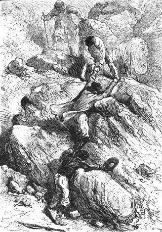
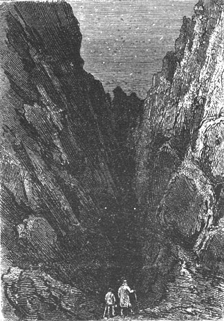

Several moments later the three hunters found themselves in front of a crackling hearth. Cyrus Smith and the reporter were there. Pencroff looked from one to the other without saying a word, his capybara in hand.
“Yes indeed, my good fellow,” cried the reporter. “Fire, real fire, that will perfectly roast this magnificent game which we will feast on within the hour.”
“But who kindled it?...” asked Pencroff.
“The sun!”
Gideon Spilett’s response was precise. It was the sun which had furnished the heat that had astonished Pencroff. The sailor could not believe his eyes and he was so amazed that he did not think of questioning the engineer.
“You had a lens, sir?” Herbert asked Cyrus Smith.
“No, my child,” he replied, “but I made one.”
And he showed the apparatus that had served him as a lens. It was simply two glasses that he had lifted from the watch of the reporter and of his own. After having filled them with water and made their edges adherent by means of a little clay, he had thus fabricated a real lens which, concentrating the sun’s rays on some very dry moss, produced combustion.
The sailor examined the apparatus, then he looked at the engineer without saying a word except that his look spoke volumes. Yes, as far as he was concerned, if Cyrus Smith was not a god, he was assuredly more than a mere man. Finally speech returned and he shouted:
“Note that, Mister Spilett, note that in your book!”
“It is noted,” replied the reporter.
Then, with Neb helping, the sailor arranged the spit, and the capybara, properly dressed, was soon roasting like a simple suckling pig before a bright and sparkling flame.
The Chimneys once more became habitable, not only because the corridors were warmed by the fire from the hearth but because the partitions of stones and sand were re-established.
One could see that the engineer and his companion had employed their day well. Cyrus Smith had almost completely recovered his strength which he tested by climbing to the upper plateau. From this point his eye, accustomed to evaluate heights and distances, gazed for a while on this cone whose summit he wanted to reach on the next day. The mountain, situated about six miles to the northwest, appeared to him to measure three thousand five hundred feet above sea level. Consequently, the gaze of an observer posted at the summit would cover a radius of at least fifty miles. It was therefore probable that Cyrus Smith would easily resolve the question “continent or island” which he justifiably gave precedence over all other questions.
They supped in style. The cabybara meat was excellent. The seaweed and the pine kernel almonds completed the meal during which the engineer spoke little. He was preoccupied with the projects of the next day.
Once or twice Pencroff put forth some ideas about things it would be convenient to make, but Cyrus Smith, who evidently had a methodical mind, was content to shake his head.
“Tomorrow,” he repeated, “we will know what we have to contend with and we will act accordingly.”
The meal completed, some additional armfuls of wood were thrown on the fire and the hosts of the Chimneys, including the faithful Top, fell into a deep sleep. No incident disturbed this peaceful night and the next day, March 29th, fresh and hearty, they woke up ready to undertake this excursion which would fix their fate.
All was ready for the departure. The remains of the capybara would provide nourishment for Cyrus Smith and his companions for the next twenty four hours. Besides they hoped to revictual en route. Since the glasses were put back on the engineer’s and the reporter’s watches, Pencroff burnt a little linen to serve as tinder. As to flint, there would be no shortage of that on terrain that was of plutonic origin.
It was seven thirty in the morning when the explorers, armed with clubs, left the Chimneys. Following Pencroff’s advice it seemed best to take the road already used through the forest and to use another route on the return trip. It was also the most direct way to reach the mountain. They therefore turned the south corner and followed the left bank of the river which was abandoned at the point where it curved toward the southwest. The footpath, already frayed under the green trees, was found and at nine o’clock Cyrus Smith and his companions reached the western edge of the forest. The ground, which was not too hilly up to that point, marshy at first, dry and sandy later, betrayed a slight incline as one went from the coast to the interior. Several fleeing animals had been indistinctly seen in the forest. Top briskly cut them off, but his master recalled him at once because the time had not come to pursue them. Later they would see. The engineer was not a man to let himself be distracted from his intent. One would not even be mistaken in affirming that he did not observe the country, neither its configuration nor its natural productions. His only objective was this mountain which he aspired to climb and he went straight to it.
At ten o’clock they halted for a few minutes. On leaving the forest the mountain system of the country appeared before their eyes. The mountain was composed of two cones. The first, truncated at a height of approximately two thousand five hundred feet, was sustained by capricious spurs which seemed to spread out like immense claws gripping the ground. Between these spurs were narrow valleys, bristling with trees, the latter rising in clusters up to the truncation of the first cone. However, the vegetation seemed less abundant on the side of the mountain exposed to the northeast and they could see there the rather deep stripes made by flowing lava.
A second cone rested on the first cone, slightly rounded at the top, standing a bit askew. One could call it a large hat placed over an ear. It seemed to be formed of bare terrain with many reddish rocks showing.
It was the summit of the second cone that they agreed to reach and the ridge of the spurs offered the best way to get there.
“We are on volcanic terrain,” Cyrus Smith said, and his companions, following him, began to climb little by little up the back of a spur which, by a winding path and consequently an easier pathway, ended at the first plateau.
There were many swellings on the ground evidently made by plutonic convulsion. Erratic blocks, basaltic debris, pumice rocks and volcanic glass were all about. Several hundred feet below grew these conifers, in thick isolated clusters, at the bottom of narrow gorges scarcely reached by the sun’s rays.
During the first part of this ascension on the lower ramps, Herbert noted prints which indicated the recent passage of large animals, wild or otherwise.
“Perhaps these beasts will not be willing to relinquish their domain to us,” said Pencroff.
“Well,” replied the reporter, who had already hunted the tiger in India and the lion in Africa, “we will see about getting rid of them but in the meantime let us be careful.”
They gradually went higher. The route was long because it was lengthened by detours and obstacles that they could not cross directly. Also at times the ground was suddenly hollow and they found themselves at the edge of deep crevices that they had to go round. They thus had to retrace their steps in order to follow some practical path, which took time and energy. At noon, when the small troupe halted for lunch at the foot of a large cluster of spruce trees near a brook that fell in a cascade, they found themselves still only half way to the first plateau, which they would not reach till nightfall.
At this height the sea’s horizon was very enlarged, but on the right the view was interrupted by a sharp promontory in the southeast and they could not determine whether the coastline was abruptly connected to some rear terrain. At the left the line of sight extended several miles to the north; nevertheless from the northwest, at the point occupied by the explorers, it was interrupted by a ridge of a bizarre buttress formed from the powerful abutment of the central cone. Hence they still could not answer the question that Cyrus Smith wanted to resolve.
At one o’clock the climb was resumed. It was necessary to shift to the southwest and once again move through rather thick brushwood. There under the cover of the trees, flew several couples of gallinules of the pheasant family. They were “tragopans” adorned by fleshy wattles which hang from their throats and by two slender cylindrical horns set behind their eyes. Among these couples, which are the size of a rooster, the female is uniformly brown while the male glitters in his red plummage sprinkled with small white teardrop shapes. Gideon Spilett with a stone thrown skillfully and vigorously, killed one of these tragopans that Pencroff, famished by the open air, could not look at without some covetousness.
Upon leaving the brushwood the climbers pushed each other leg up, struggling on a very steep hundred foot slope to reach a higher level composed of volcanic ground with few trees. They then went toward the east once more moving on a winding path which made the very steep slopes more practical. Everyone had to carefully choose the spot where he placed his foot. Neb and Herbert were in front, Pencroff was in the rear and Cyrus and the reporter were between them. The animals which frequented these heights—and there was no lack of their traces—necessarily belonged to those species of sure foot and supple backbone, the chamois and the izards. They saw several of them but this was not the name that Pencroff gave them because in a moment:
“Sheep!” he shouted.

The climbers pushed each other leg up...
Everyone stopped fifty feet from a half dozen of these large animals with strong horns curving rearward and flat at the tip and with woolen fleece hidden under long silky buff colored hair. They were not ordinary sheep but a species generally found in the mountainous regions of the temperate zones which Herbert gave the name of mouflons.
“Do they have legs and chops?” asked the sailor.
“Yes,” replied Herbert.
“Well, then they are sheep,” said Pencroff.
These animals stood still among the basaltic debris looking astonished as if they saw biped humans for the first time. Then their fear suddenly awakened and they disappeared in a bound among the rocks.
“Au revoir,” Pencroff shouted in a tone so comic that Cyrus Smith, Gideon Spilett, Herbert and Neb could not refrain from laughing.
The climb continued. They frequently noted, on certain declivities, traces of very capriciously scored lava. They had to go around small volcanic areas of hot sulphur vapors which sometimes cut across the route followed by the climbers. In several places sulphur was present in crystalline form, among material that was generally there before the lava flows, material such as pozzuolanas in irregular pellets, and highly torrefied white cinders made by an infinity of small feldspar crystals.
On the approaches to the first plateau, formed by the truncation of the lower cone, the difficulties of climbing were very pronounced. Around four o’clock the last zone of trees had been passed. There only remained, here and there, some emaciated pines which had a hard life in resisting the strong open winds at this height. Fortunately for the engineer and his companions, the weather was magnificent and the atmosphere tranquil because a strong breeze at an altitude of three thousand feet would have affected their balance. The purity of the sky at the zenith was felt through the transparent air. Perfect calm reigned around them. They could no longer see the sun, then covered by the vast shade of the upper cone, which masked the western horizon. This enormous shadow, reaching to the shore, would lengthen as the radiant luminary went lower in it daily course. Several wisps of haze rather than clouds began to rise in the east colored by all the colors of the spectrum under the action of the solar rays.
Only five hundred feet then separated the explorers from the plateau that they wished to attain in order to establish camp for the night but these five hundred feet were increased to more than two thousand by the zigzags that they had to follow. The ground, as has been said, was hollow underfoot. The slope was so steep that they slipped on the lava when the ridges, worn by the wind, did not offer sufficient support. Evening came on little by little and it was almost night when Cyrus Smith and his companions, very tired from a climb of seven hours, reached the plateau of the first cone. It was then a question of organizing a camp and of recuperating by eating first and sleeping afterwards. The second stage of the mountain rose on a base of rocks among which they would easily find a retreat. Fuel was not abundant. However they could obtain fire by means of moss and dry brushwood which grew on certain portions of the plateau. While the sailor made his fireplace on rocks which he arranged for this purpose, Neb and Herbert occupied themselves with gathering fuel. They soon returned with a load of brushwood. The flint was struck, the burnt linen caught the sparks of the flint and with Neb blowing, a crackling fire developed in a few moments sheltered by the rocks.
The fire was only intended to withstand the temperature which was a little cold for the night. It was not used to roast the pheasant which Neb saved for the next day. The rest of the capybara and a few dozen almonds of the pine kernel formed the elements of supper. It was not more than six thirty when everything was finished.
Cyrus Smith then thought of exploring, in the semi-obscurity, this large circular foundation which supported the upper cone of the mountain. Before taking some rest he wanted to know if this cone could be turned at its base because if its flanks were too steep it would render the summit inaccessible. This question did not cease to preoccupy him because it was possible that on the side toward which the hat inclined, that is to say toward the north, the plateau was not practical. Now, on the one hand, if they could not reach the summit of the mountain, and if on the other hand they could not go round the base of the cone then it would be impossible to examine the western portion of the country and the purpose of the climb would be in part unfulfilled.
Then the engineer, without taking account of his fatigue, leaving Pencroff and Neb to organize the sleeping arrangements and Gideon Spilett to note the incidents of the day, began to follow the circular border of the plateau going northward. Herbert accompanied him.
The night was fine and tranquil and not yet fully dark. Cyrus Smith and the lad walked near each other without speaking. In certain places the plateau was wide and they passed without difficulty. Other places, obstructed by debris, offered only a narrow path such that two people could not walk abreast. After a march of twenty minutes Cyrus Smith and Herbert had to stop. From this point on the slopes of the two cones were flush. No shoulder separated the two parts of the mountain. A slope of nearly 70° made it impractical.
But if the engineer and the lad had to turn away from following a circular route, in compensation there was the possibility that they could ascend the cone directly.
In fact there was before them a deep opening in the solid block. It was the flare of the upper crater, the outlet so to speak, by which liquid eruptive material escaped at a time when the volcano was still active. The hardened lava and the encrusted slag formed a sort of natural staircase well designed for a climb, which would facilitate access to the summit of the mountain.
A glance sufficed for Cyrus Smith to recognize the situation and without hesitating and followed by the lad he entered the enormous crevice in the midst of the growing darkness.
There was still a height of a thousand feet to climb. Would the inclines of the interior of the crater be practical? They would see. The engineer would continue his climb as long as he could. Fortunately the incline was gradual and winding, describing a large helical path along the interior of the volcano and favoring the upward march.
As to the volcano itself, there was no doubt that it was completely extinct. No smoke escaped from its bowels. No flame revealed itself in the deep cavities. Not a growl, nor a murmur, nor a disturbance left its obscure pits which perhaps extended to the bowels of the earth. Even the atmosphere within the crater was not saturated with any sulphurous vapor. It was not merely the slumber of a volcano. It was its complete extinction.
Cyrus Smith’s attempt would succeed. Little by little Herbert and he, ascending the inner walls, saw the crater enlarge above their heads. The radius of this circular portion of the sky, surrounded by the borders of the cone, was getting noticeably larger. With each step, so to speak, that Cyrus Smith and Herbert made, new stars were entering their field of view. The magnificent constellations of the southern sky were shining brightly. At zenith the splendid Antares of Scorpio was sparkling with a pure glare and not far away was the β of Centaurus which is thought to be the nearest star to the terrestial globe. Then as they went higher, Fomalhaut of the Southern Fish appeared, the Southern Triangle and finally near the southern pole of the sky, the sparkling Southern Cross which takes the place of the pole star of the northern hemisphere.

As they went higher...
It was nearly eight o’clock when Cyrus Smith and Herbert set foot on the upper crest of the mountain, the summit of the cone.
It was then completely dark and they could not see for more than two miles. Did the sea completely surround this unknown land or was this land attached in the west to some continent of the Pacific? They still could not tell. Toward the west clouds were clearly delineated by the horizon adding to the darkness and the eye could not distinguish the confusion of the sky and water on this circular line.
But at one point of this horizon a vague light suddenly appeared slowly descending as the clouds rose to the zenith.
It was the slender crescent of the moon about to set. But its light was sufficient to clearly show the horizon then detached from a cloud and the engineer was able to see its trembling image reflected for a moment on the liquid surface.
Cyrus Smith seized the lad’s hand and in a solemn voice:
“An island!” he said at the moment when the light of the lunar crescent was extinguished by the waves.